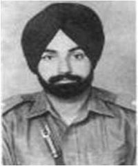
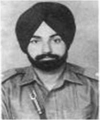

The Indo-Pakistani War of 1965 or the Second Kashmir War was a culmination of skirmishes that took place between April 1965 and September 1965 between Pakistan and India. The conflict began following Pakistan's Operation Gibraltar, which was designed to infiltrate forces into Jammu and Kashmir to precipitate an insurgency against Indian rule, It became the immediate cause of the war. The seventeen-day war caused thousands of casualties on both sides and witnessed the largest engagement of armored vehicles and the largest tank battle since World War II. Hostilities between the two countries ended after a ceasefire was declared through UNSC Resolution 211 following a diplomatic intervention by the Soviet Union and the United States, and the subsequent issuance of the Tashkent Declaration. Much of the war was fought by the countries' land forces in Kashmir and along the border between India and Pakistan. This war saw the largest amassing of troops in Kashmir since the Partition of India in 1947, a number that was overshadowed only during the 2001-2002 military standoff between India and Pakistan. Most of the battles were fought by opposing infantry and armoured units, with substantial backing from air forces, and naval operations.
India had the upper hand over Pakistan when the ceasefire was declared. Although the two countries fought to a standoff, the conflict is seen as a strategic and political defeat for Pakistan, as it had neither succeeded in fomenting insurrection in Kashmir nor had it been able to gain meaningful support at an international level. Internationally, the war was viewed in the context of the greater Cold War, and resulted in a significant geopolitical shift in the subcontinent. Before the war, the United States and the United Kingdom had been major material allies of both India and Pakistan, as their primary suppliers of military hardware and foreign developmental aid.
During and after the conflict, both India and Pakistan felt betrayed by the perceived lack of support by the western powers for their respective positions; those feelings of betrayal were increased with the imposition of an American and British embargo on military aid to the opposing sides. As a consequence, India and Pakistan openly developed closer relationships with the Soviet Union and China, respectively. The perceived negative stance of the western powers during the conflict, and during the 1971 war, has continued to affect relations between the West and the subcontinent. In spite of improved relations with the U.S. and Britain since the end of the Cold War, the conflict generated a deep distrust of both countries within the subcontinent which to an extent lingers to this day
In 1965, India and Pakistan faced off in the 2nd of 4 wars they have fought between 1947 to 1999. After a month of fighting, we emerged victoriously and Pakistan's dream of annexing Jammu and Kashmir remained unrealised. But India's victory came due to the sacrifices of several heroes. 55 years on, their sacrifices have not been forgotten nor has their legacy. They remain in our hearts.

 
